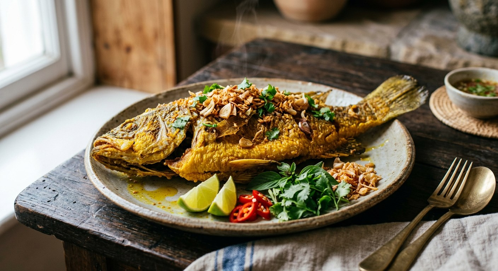

Whole fish rubbed in pounded turmeric, garlic and pepper, deep-fried until the skin crackles, then buried under golden fried garlic — the south's everyday fried fish, and the reason a southern plate always glows yellow.

Ask what makes a fried fish southern, and the answer is in the name: ขมิ้น (kamin), fresh turmeric. The Institute of Nutrition at Mahidol University puts it plainly — southern cooks put turmeric in almost everything, and their fried fish is defined by it: a pale fish comes out of the marinade and the wok a deep golden yellow, with the warm, earthy smell no pepper can fake. The dish is so much the region's signature that a southern set meal is built around it: a piece of turmeric fish next to a fiery curry, the mild crisp fish calming the burn between mouthfuls.
It is also a working dish. Kapook's recipe comes from a Pantip member's fishing story — grey mullet (ปลากระบอก) netted at the dark of the moon, when the fish is fat with roe, and eaten the same day with gaeng som. That recipe's author admits the dish's one real drawback: it is oil-hungry, and some households skip it because the turmeric-garlic paste scorches before the fish cooks. The southern fix, shared by nearly every source, is what makes the dish: the marinade's garlic is fried separately, slowly, into a golden crunch that goes back on top of the fish at the end.
The fish itself is negotiable — mullet, sand whiting, tilapia, sea bass, snakehead. Sanook lists ten acceptable fish. The turmeric is not.
| Thai | English | Amount |
|---|---|---|
| ปลา | Whole white fish, scaled and gutted | 1 (~500 g) |
| ขมิ้น | Fresh turmeric (or turmeric powder) | 1 rhizome (~2 cm) / 1 tsp powder |
| กระเทียม | Garlic, divided | 15 cloves |
| พริกไทย | White peppercorns | 1 tsp |
| เกลือ | Salt | ½ tsp |
| น้ำมันสำหรับทอด | Oil, for deep-frying | as needed |
The Mahidol marinade: the institute's sand-whiting version adds a spoon of shrimp paste (กะปิ) to the pound — turmeric, pepper, garlic, shrimp paste and salt — for four whiting, marinated 20 minutes and fried in palm oil. The Dinner Studio pot: 500 g fish, 1 tbsp fresh turmeric (or 1 tsp powder), 5 cloves garlic, 1 tsp each pepper and salt, marinated 30 minutes, fried 5–7 minutes a side, served with seafood dipping sauce. The Kapook pot: 3 turmeric rhizomes, 5 whole heads of garlic, 1 tbsp pepper, ½ tbsp salt for one mullet, marinated a full hour — its author fries the whole paste separately into the crispy topping.
The marinade. Wongnai keeps it minimal — garlic, turmeric and salt. Sanook, Kapook and Dinner Studio add white pepper. Mahidol adds shrimp paste (กะปิ) as well. All five agree on the core: fresh turmeric pounded with garlic, never a dry rub of curry powder.
How long to marinate. Wongnai and Sanook say 15 minutes; Mahidol 20; Dinner Studio 30, and up to overnight if you can; Kapook's fisherman leaves it a full hour. Nobody marinates less than fifteen minutes, and everyone agrees longer is better rather than worse.
What happens to the paste at frying time. Wongnai wipes it off so it does not scorch — and, if you like the flavour, fries the scraped-off paste separately until crisp. Kapook builds the whole dish on that idea: the paste is fried slowly into golden turmeric-garlic crumbs and returned as the topping. Sanook and Mahidol instead set aside half the garlic from the start, fry it into plain crispy garlic, and leave the marinade on the fish. Three roads to the same place: the crunch must come from fried garlic, not from the fish.
The fish. Kapook's mullet, Mahidol's sand whiting, Dinner Studio's sea bass or snakehead — Sanook simply lists ten acceptable species, from tilapia and mackerel to climbing perch and snakehead. The dish takes whichever fish the market has; the south's preference is for small sea fish fried crisp enough to eat bones and all, which Mahidol notes is also how you get the calcium.
The oil. Mahidol, unusually for a recipe site, weighs palm oil against health — palm oil gives the crispest skin but is heavy in saturated fat, so it insists on blotting the fish well after frying. The other sources simply say plenty of oil, medium flame.
This recipe is translated from the following Thai-language sources. Where they disagree, we've said so.
1. Sanook Women — "วิธีทำปลาทอดขมิ้น เมนูฮิตปักษ์ใต้ ทำง่าย อร่อยมากด้วย" (the home recipe used here; the divided-garlic method and the ten recommended fish) — sanook.com
2. Kapook Cooking — "ปลากระบอกทอดขมิ้น เมนูปลาทอดหมักสมุนไพรสไตล์ปักษ์ใต้" (the mullet pot; the slow-fried turmeric-garlic topping, recipe by a Pantip member) — cooking.kapook.com
3. Mahidol University, Institute of Nutrition — "ปลาทรายทอดขมิ้น" (the sand-whiting version with shrimp paste; the south's turmeric identity and nutrition notes) — inmu.mahidol.ac.th
4. Wongnai — "สูตร ปลาทอดขมิ้น" by chubbylawyer (the wipe-off-the-marinade technique and fry times) — wongnai.com
5. Dinner Studio — "ปลาทอดขมิ้นสูตรใต้แท้" (the 500 g version; marinating overnight and the seafood dipping sauce) — dinnerstudio.net